Feasible regions and optimization
A bike shop has a limited workday. Which repairs can it schedule, and how can a graph help it decide?
A day of work at a neighborhood bike shop
A neighborhood bike shop is planning tomorrow's repairs. It can accept at most eight bicycles, and its mechanics have twelve hours available. A full tune-up takes two hours; a quick repair takes one. With customers requesting both services, how can the shop decide which work to take on?
Last week we compared costs, revenue, and profit. This week begins with a decision that comes first: what can a business actually finish? Time, staffing, space, and demand place constraints on its choices. Even an attractive plan is of little use if it requires more time than the shop has.
Let \(x\) count full tune-ups and \(y\) count quick repairs. A point \((x,y)\) on a graph describes one possible schedule. Inequalities tell us which schedules respect the limits. Their overlap is called the feasible region. We can then ask which feasible schedule best meets the shop's goal.
The feasible-region explorer displays the overlap of resource constraints. The optimizer compares goals on that region. The printable chapters cover feasible geometry and optimization.
One point records one complete plan
Let \(x\) be the number of full tune-ups and \(y\) the number of quick repairs. These are decision variables: the quantities the shop chooses. A schedule \((4,4)\) means four tune-ups and four quick repairs. The first coordinate counts tune-ups; the second counts quick repairs.
On the graph, move horizontally to the x-value, then vertically to the y-value. The point is a whole production plan, not a moment in time. Later, the line between two schedules will help us understand averages of possible workdays.
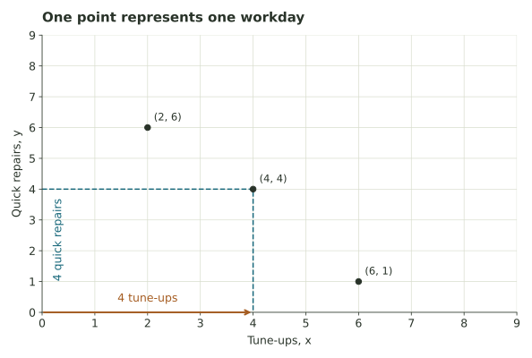
| Per bicycle or resource | Tune-up, x | Quick repair, y | Available |
|---|---|---|---|
| Bicycles accepted | 1 | 1 | 8 bikes |
| Mechanic hours | 2 | 1 | 12 hours |
| Contribution after parts | $30 | $20 | What the shop wants to increase |
Here, contribution means money remaining after buying the replacement parts. A real shop also has wages, rent, and other expenses. We use simple amounts so that the different schedules are easy to compare. Subtracting the same fixed daily expense from every schedule would not change which one has the greatest contribution.
The graph and the real workday
For the geometry, the shaded region includes points with fractional coordinates. A real shop cannot finish half a bicycle, so we will check that a final schedule uses whole numbers of jobs.
What does (5,2) mean? What would (2,5) mean, and why is it a different decision?
Compare your reasoning
The first schedule has five tune-ups and two quick repairs; the second has two tune-ups and five quick repairs. They use different amounts of mechanic time and earn different amounts.
Each constraint compares a total with a limit
Each repair involves one bicycle. Since the shop can accept at most eight bikes, the total number of repairs must satisfy \(x+y\leq8\). The symbol \(\leq\) means “less than or equal to”: eight are fine, but nine would exceed the limit.
A full tune-up takes two mechanic-hours, and a quick repair takes one. That gives \(2x+y\) hours of work, so \(2x+y\leq12\). The coefficient 2 means two hours per tune-up. Multiplying hours per job by the number of jobs gives total hours.
The last two constraints rule out negative numbers of repairs. A plan is feasible if it satisfies every constraint. Every resource limit must be satisfied at the same time.
Example · Test (5,3) and (3,3)
Five tune-ups and three quick repairs involve \(5+3=8\) bikes, which fits the capacity. But the schedule requires \(2(5)+3=13\) mechanic-hours, one more than the shop has. It is infeasible even though the number of bikes is acceptable.
Three tune-ups and three quick repairs involve six bikes and nine mechanic-hours. This is a feasible schedule, leaving room for two more bikes and three hours of mechanic time. The unused amounts are called slack.
| Words | Mathematical form | Meaning |
|---|---|---|
| At most 8 | total ≤ 8 | 8 is allowed; larger totals are not |
| At least 8 | total ≥ 8 | 8 is allowed; smaller totals are not |
| Exactly 8 | total = 8 | Only 8 is allowed |
| Less than 8 | total < 8 | 8 itself is excluded |
A constraint is binding, or active, at a plan when it holds with equality. At (4,4), both resource limits bind: \(4+4=8\) and \(2(4)+4=12\). A binding constraint has no slack at that plan.
Could the shop complete six tune-ups and one quick repair? Show both calculations.
Compare your reasoning
The seven bikes fit the daily bike limit, since 6+1 = 7 ≤ 8. But the work takes thirteen hours, since 2(6)+1 = 13 > 12. The shop cannot finish that schedule in the time available.
The boundary is a line; the inequality permits a whole side
Here is another situation. A community center has eight room-hours available. If \(x\) counts one-hour activities and \(y\) counts two-hour workshops, the schedule must satisfy \(x+2y\leq8\). The boundary line \(x+2y=8\) represents schedules that use all eight hours; the inequality also allows schedules that use fewer.
Example · Find two intercepts, then test one point
- Set \(y=0\): then \(x=8\), giving the x-intercept (8,0).
- Set \(x=0\): then \(2y=8\), so \(y=4\), giving the y-intercept (0,4).
- Draw the line through those points.
- Test a point off the line. At (0,0), \(0+2(0)=0\leq8\), so the side containing the origin is permitted.
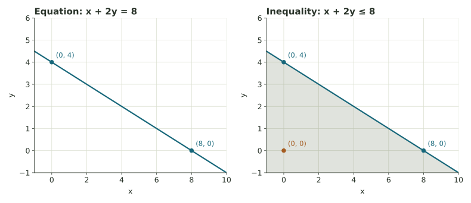
For \(\leq\) or \(\geq\), draw the boundary as a solid line because equality is allowed. For a strict inequality, such as \(<\), use a dashed boundary to show exclusion. Our optimization examples use included boundaries. If the origin lies on the boundary, choose a different test point that does not.
Back at the bike shop, \(x\geq0\) and \(y\geq0\) restrict us to the first quadrant including its axes. This restriction does not make a single half-plane a bounded region on its own; we must inspect all the conditions together.
For x + 2y ≤ 8, is (2,3) on the boundary, strictly on the permitted side, or outside? What about (4,3)?
Compare your reasoning
At (2,3), 2+2(3)=8, so it is on the included boundary. At (4,3), the total is 10, so it is outside. An included boundary point is feasible for that inequality.
The feasible region is the overlap
Return to the bike shop’s limits, \(x+y\leq8\) and \(2x+y\leq12\), with nonnegative coordinates. Each limit permits its own side of a boundary. The feasible region is their intersection: the points common to all the permitted sets.
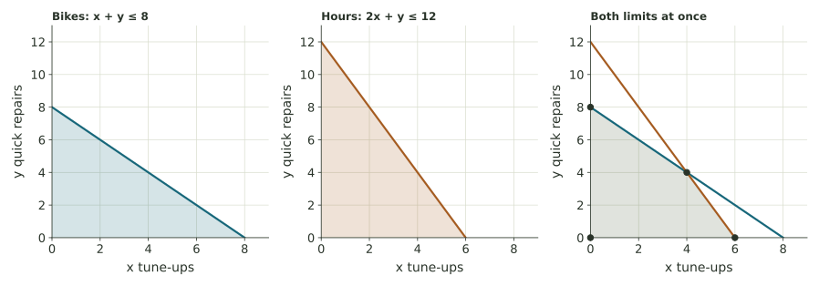
A vertex (plural: vertices) is a corner of this region. Corners come from intersecting boundaries, including the axes. A boundary intersection is only a candidate vertex until we verify all constraints.
Example · Find the non-axis corner
Solve the two resource boundaries simultaneously:
\[x+y=8,\qquad 2x+y=12.\]
Subtract the first equation from the second: \((2x+y)-(x+y)=12-8\), so \(x=4\). Substitute into \(x+y=8\) to get \(y=4\). Thus the boundaries meet at (4,4). Both coordinates are nonnegative, so this intersection is feasible.
On the x-axis, \(y=0\). The limits require both \(x\leq8\) and \(x\leq6\), so the tighter upper limit is 6. The x-axis corner is (6,0). On the y-axis, the tighter limit is 8, giving (0,8). The origin is the fourth corner.
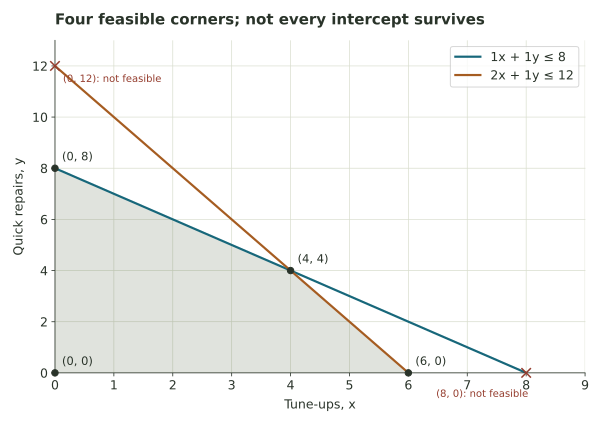
| Corner | Bikes x+y ≤ 8 | Hours 2x+y ≤ 12 | Binding resource limits |
|---|---|---|---|
| (0,0) | 0 | 0 | Neither |
| (6,0) | 6 | 12 | Hours |
| (4,4) | 8 | 12 | Both |
| (0,8) | 8 | 8 | Bikes |
The axes are also boundaries: at (6,0), for example, the nonnegativity condition \(y\geq0\) binds along with the mechanic-hour limit. A corner does not always use up both resources.
For x+y≤7 and 2x+y≤10 with x,y≥0, find the intersection of the two non-axis boundaries. Is (7,0) a feasible corner?
Compare your reasoning
Subtracting gives x=3, then y=4, so the intersection is (3,4). The intercept (7,0) fails 2x+y≤10 because it uses 14. The feasible x-axis corner is (5,0).
Convexity means that the whole segment stays inside
A set is convex if the straight segment between any two points in the set remains entirely in the set. A filled triangle, filled rectangle, and filled disk are convex. A ring is not: a segment across the hole leaves the set. The circumference of a circle alone is also not convex; the disk includes the interior.
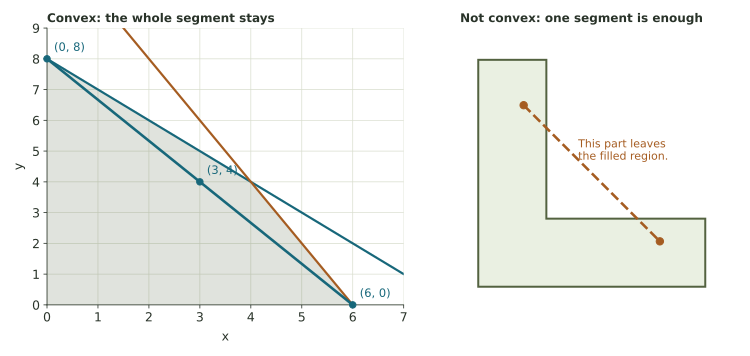
Example · Average two feasible plans
The halfway plan between (6,0) and (0,8) is \(((6+0)/2,(0+8)/2)=(3,4)\). It involves seven bikes and ten mechanic-hours, both within the daily limits.
Why does averaging work for any two feasible real-valued plans? Each resource total at the average plan is the average of the two resource totals. If each total is at most a limit, their average is too. The same reasoning works for any mixture with nonnegative weights adding to 1.
Every half-plane is convex, and intersections of convex sets are convex. This explains the shape of our feasible region. A union is different: two separated filled rectangles are individually convex, but taking all points in either rectangle produces a set with a gap.
Averages are different from actual workdays. Halfway between (1,0) and (0,1) is (0.5,0.5), which can describe an average over several days but not a day's schedule of whole bicycles.
Why is a filled rectangle convex while two separated filled rectangles, taken together, are not?
Compare your reasoning
A segment between any two points in one filled rectangle stays in that rectangle. With two separated rectangles, choose one point in each: the connecting segment crosses a gap outside their union.
An objective gives each plan a score
Suppose the shop earns $30 after replacement parts for each tune-up and $20 for each quick repair. The total contribution for a day is \[P=30x+20y.\]
This is the objective function: a rule assigning a number to each plan. The letter P names the total contribution in dollars. To maximize it means to find the largest value among feasible plans.
Example · Feasible does not mean optimal
Three tune-ups and three quick repairs give \(P=30(3)+20(3)=150\) dollars. Four of each give \(P=30(4)+20(4)=200\) dollars. Both are possible schedules, but the second earns more.
Five tune-ups and three quick repairs would bring in $210. A larger earnings figure cannot make an impossible schedule workable: it requires more mechanic time than the shop has.
A function such as \(30x+20y\) is linear: every additional tune-up adds the same $30 and every quick repair adds the same $20. There is no product \(xy\), squared quantity, or changing rate. A linear program combines a linear objective with linear constraints. Here “programming” means planning; writing computer code is not required.
At (2,5), what is P=30x+20y? Does knowing the money earned tell you whether the schedule is feasible?
Compare your reasoning
P=30(2)+20(5)=160 dollars. The score alone does not prove feasibility; check the constraints. Here the schedule has 7 bikes and uses 9 mechanic-hours, so the plan is feasible.
For this bounded polygon, compare the corners
Our continuous feasible region contains infinitely many points. The corner-point principle says that a linear objective on a nonempty, closed, bounded polygonal feasible region attains its maximum and minimum at vertices. “Bounded” means it fits inside some finite box. “Closed” here means the boundary is included.
This guarantees that at least one vertex gives the best value. It does not guarantee a unique best point, or say that every best point must be a vertex. Those distinctions matter when there is a tie.
| Feasible vertex | Calculation of P = 30x + 20y | Contribution |
|---|---|---|
| (0,0) | 30(0)+20(0) | $0 |
| (6,0) | 30(6)+20(0) | $180 |
| (4,4) | 30(4)+20(4) | $200 |
| (0,8) | 30(0)+20(8) | $160 |
The largest contribution is $200 at (4,4). The shop should schedule four tune-ups and four quick repairs. Report both the schedule and the money earned; they answer different questions.
Why a corner comparison can work
Any point in a filled convex polygon can be expressed as a mixture of its vertices. A linear objective at that point is the same mixture of the vertex scores. An average of scores cannot exceed the largest score or fall below the smallest. This is the geometric reason the table can locate an optimum.
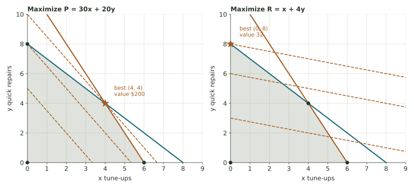
In our model, the best plan is also a whole-number plan, so it remains optimal if we restrict production to whole bicycles. A continuous optimum is an upper bound for the integer choices; when a whole-number plan attains it, the integer problem is solved too.
Why is checking just the two axis corners insufficient?
Compare your reasoning
The best corner can occur where two non-axis boundaries meet. Here (4,4) gives $200, exceeding the $180 and $160 at the axis corners. The method requires every feasible vertex.
The feasible region stays; the goal can change
Suppose a new service contract favors quick repairs. To see how a change in priorities changes the answer, use the alternative score \(R=x+4y\). At the same four vertices its values are 0, 6, 20, and 32. Now (0,8) is best. The resource limits and region did not change. The objective changed.
Alternatively, suppose the shop wants to return the largest number of bikes to customers, regardless of type. Maximize \(T=x+y\). The eight-bike limit already tells us \(T\leq8\). Both (4,4) and (0,8) attain 8, and every point on the segment between them also attains 8.
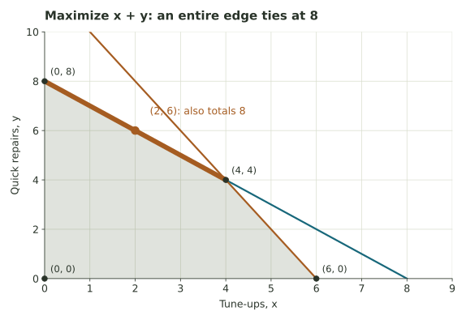
Example · A tie leaves room for another consideration
If the goal is to help as many customers as possible, (4,4) and (0,8) both serve eight bikes. But the first needs twelve mechanic-hours and the second needs only eight. To save mechanic time, choose (0,8); to earn more after parts, choose (4,4).
A second goal can distinguish plans that tie under the first. We should name that goal rather than pretend the first objective made the whole decision.
If two adjacent feasible vertices both give the maximum score for a linear objective, what happens between them? Does the same conclusion follow merely because two vertices have equal scores?
Compare your reasoning
Every point on the edge joining two optimal adjacent vertices has the same maximum score. Equal scores alone do not establish optimality: some other vertex might score higher. First compare all feasible corners.
“At least” often reverses the feasible side
A neighborhood group is organizing a back-to-school supply drive. A store offers two bundles. Bundle A contains 1 notebook and 2 pencils and costs $4. Bundle B contains 1 notebook and 1 pencil and costs $3. The group needs at least six notebooks and eight pencils for the students it is helping. Let x and y be the respective bundle counts.
We can buy extra supplies, so there is no upper limit in this model. The feasible region extends up and to the right. It is unbounded, but that does not mean its minimum cost is missing.
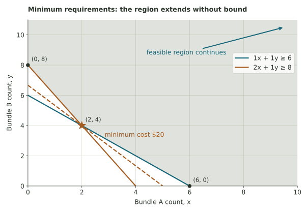
| Boundary vertex | Notebooks | Pencils | Cost 4x+3y |
|---|---|---|---|
| (0,8) | 8 | 8 | $24 |
| (2,4) | 6 | 8 | $20 |
| (6,0) | 6 | 12 | $24 |
The group can meet both requirements for $20 with two A-bundles and four B-bundles. For this nonnegative-variable model, the least cost occurs at a feasible vertex. On an unbounded region, we must also check whether some allowed direction keeps improving the objective. Here all costs are positive, so going farther out cannot make the cost decrease forever.
Buying nothing costs zero but would leave students without the supplies. This is why minimizing cost cannot be separated from stating what must be provided. If the only restrictions were upper limits and nonnegativity, doing nothing could indeed be the mathematical minimum-cost plan.
Why is (0,6) not feasible for the supply order even though it provides all six notebooks?
Compare your reasoning
It supplies only 6 pencils, below the minimum 8. Both requirements must hold. A boundary intercept of one requirement may fail another.
A model can have a best plan, no plan, or no finite best value
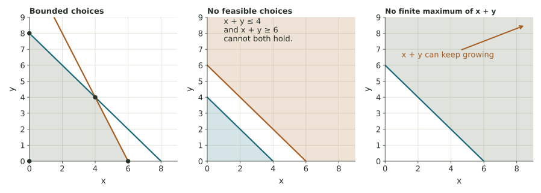
- Infeasible model: no point satisfies every constraint. For example, \(x+y\leq4\) and \(x+y\geq6\) cannot both hold. There is no permissible plan to optimize.
- Unbounded objective: feasible plans exist, but their scores improve without limit. For example, maximizing \(x+y\) with only \(x+y\geq6\) and nonnegativity allows arbitrarily large totals.
- Finite optimum: some feasible plan attains the best value. It may be one point, an edge, or a larger set when scores tie.
The optimizer identifies these different outcomes. It computes vertices from the actual constraints; a corner of its graph window is not automatically a real feasible vertex.
Included boundaries matter too
With \(0\leq x<1\), there is no largest allowable x: any proposed x can be increased a little while staying below 1. The value 1 is a limiting bound, but it is excluded. Our corner method uses non-strict inequalities so the relevant boundaries are available.
Does an unbounded feasible region always imply that there is no minimum? Give an example from this reading.
Compare your reasoning
No. The supply-order region extends indefinitely, but positive costs give a minimum of $20 at (2,4). Unbounded choices and an unbounded objective are different properties.
A fractional optimum is a useful bound, not an automatic plan
Acres, mixture amounts, and hours can often be treated as divisible. Chairs, buses, and repaired bicycles usually cannot. Requiring whole-number decisions adds an integer constraint. It changes which points are allowed, even when the drawn continuous region stays the same.
Example · Rounding can fail in two ways
Maximize \(S=5x+8y\) subject to \(x+2y\leq8\), \(3x+2y\leq10\), and nonnegativity. The continuous best point is (1,3.5), with score \(5(1)+8(3.5)=33\).
Rounding up to (1,4) violates both limits: the totals become 9 and 11. Rounding down to (1,3) is feasible but scores only 29. The whole-number plan (0,4) is feasible and scores 32, so rounding down missed a better plan.
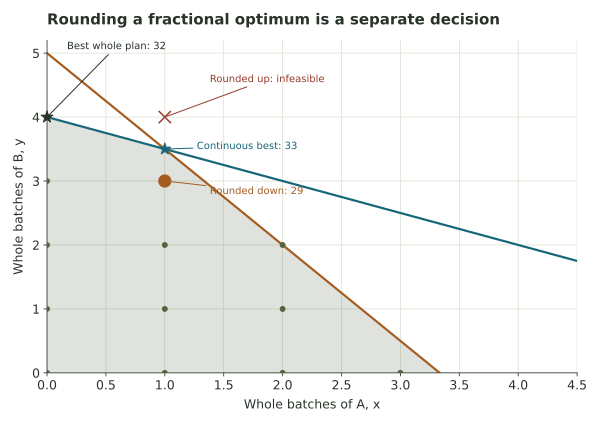
To verify the integer optimum here, try y = 0, 1, 2, 3, 4. The largest allowable whole x-values are 3, 2, 2, 1, 0, giving respective scores 15, 18, 26, 29, 32. This finite check establishes the best whole plan.
What does the continuous maximum 33 establish about any feasible whole-number score in this example? Why does it not establish that 33 can be achieved with whole numbers?
Compare your reasoning
Every whole-number feasible plan is also continuously feasible, so its score is at most 33. But the point giving 33 has a fractional coordinate, so it does not establish an attainable whole-number score.
A convex combination is a weighted average of points
Weeks 2–3 used fractions, relative weights, and averages to summarize numbers. We can average points by averaging their coordinates. For points \(A=(2,1)\) and \(B=(8,5)\), use weights 0.75 and 0.25:
A convex combination uses nonnegative weights that add to 1. For two points, all these combinations fill the segment between them. For three noncollinear points, they fill the triangle. The smallest convex set containing the given points is their convex hull.
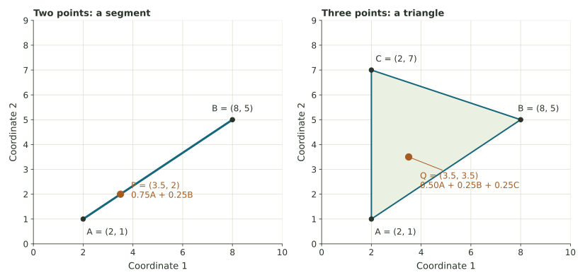
The AI application isolates one use of this idea: a normalized nonnegative weighted combination of value vectors in attention. The geometric guarantee concerns that one averaging step. Later transformations in a model need not stay in the original hull, and the weights do not certify that an interpretation is true.
Why do weights 0.6 and 0.4 define a convex combination, while 1.2 and −0.2 do not?
Compare your reasoning
The first pair is nonnegative and sums to 1. The second also sums to 1 but has a negative weight; it can extrapolate beyond the segment. Both conditions are needed.
A clear recommendation names its goal and assumptions
Linear models assume constant rates: each tune-up takes the same two hours and earns the same $30 after parts; each quick repair takes one hour and earns $20. Actual work can involve cancellations, unusually difficult repairs, different mechanics, and changing parts prices. The graph describes the consequences of the assumptions we have made.
Increasing a resource allowance in a “≤” constraint expands the feasible set or leaves it unchanged. Therefore the best maximum score cannot decrease. But it need not improve: another resource may still block every better plan. Tightening a limit can shrink the set or even make it empty.
Example · More mechanic-hours do not create more customers
Keep \(x+y\leq8\), but suppose the shop can now staff sixteen mechanic-hours. It could schedule eight full tune-ups: (8,0) involves eight bikes and sixteen hours and earns $240 after parts. Adding more hours alone would not increase the maximum while the shop still accepts only eight bikes. At $30 per tune-up, eight bikes could earn at most $240.
A practical routine
- Identify what the people involved can choose, what the units mean, and whether fractions make sense.
- Translate every resource limit and minimum requirement into a constraint.
- State the objective and whether to maximize or minimize it.
- Find all feasible vertices and check candidate intersections.
- Compare objective values and identify ties or improving directions.
- Check whole-number restrictions and interpret the plan and value.
- Ask whom the decision affects, what the model leaves out, and what information could change the recommendation.
Week 9 adds another reason a plan might be impossible: locations and resources must be connected by usable routes. Keep the same distinction there—what is allowed, what is preferred, and what the model leaves out.
Continue from geometry to a decision
The laboratory builds the core skills. The extension develops complete maximum and minimum problems. The workshop application asks for a production recommendation; the AI application makes convex mixtures visible. Use the discussion to test a classmate’s reasoning against the constraints.
The numerical scenarios are invented teaching examples. Optional AI background: Vaswani and colleagues, Attention Is All You Need, §3.2. The course activities require coordinate arithmetic, not the paper’s matrix machinery.